● Results
This section presents the key findings of the lab project, particularly focusing on air pollution patterns, land cover distribution, and population exposure across the Greece.
● Pollutant Concentration Maps (2020)
EU is reporting their annual according concentration maps according to:
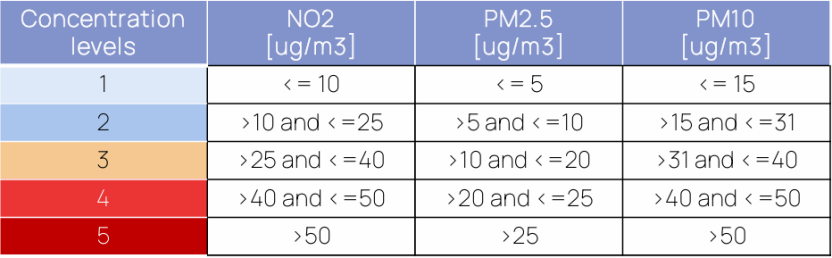
We classified the annual concentrations of NO₂, PM2.5, and PM10 into five levels based on EU Air Quality Guidelines. The classification allows for easy identification of areas with elevated pollution levels.
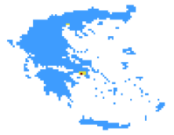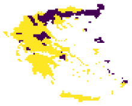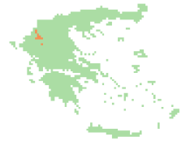
NO2 PM2.5 PM10
The pollutant concentration maps for the year 2020 reveal distinct spatial patterns for NO₂, PM2.5, and PM10 across the study area. The majority of NO₂ concentrations fall within the second classification level, indicating moderate pollution levels typically ranging between 10 and 25 µg/m³. PM2.5 values are more varied, with areas falling into both the second and third levels, suggesting localized pollution hotspots. In contrast, PM10 concentrations predominantly belong to the third level, indicating relatively higher presence of coarse particulate matter. Notably, none of the three pollutants exceeded the current EU annual limit values (NO₂: 40 µg/m³; PM2.5: 25 µg/m³; PM10: 40 µg/m³), suggesting that, from a regulatory perspective, the air quality across the region was generally within acceptable standards in 2020. However, the spatial variability still highlights areas of concern where targeted mitigation strategies could be considered.
● Annual Trend Variation (2022 vs 2017–2021)
To highlight short-term anomalies, we calculated the annual average difference for 2022 compared to the mean of the previous five years. Positive values suggest pollution deterioration, possibly due to traffic or meteorological factors; negative values reflect improvements likely caused by post-pandemic reductions or regional policies.
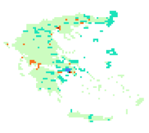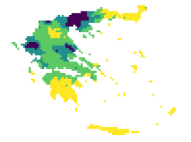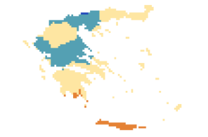
The annual NO₂ difference map shows that most regions fall within the 0 to 2 µg/m³ range, indicating a slight increase in 2022 compared to the 2017–2021 average, suggesting mild air quality deterioration.Significant increases appear in northern Greece, parts of the Peloponnese, and the Athens metropolitan area, where values exceed 2 µg/m³, with some grid cells even above 5 µg/m³, likely due to intensified traffic or unfavorable meteorological conditions.Conversely, central mountainous regions and southern islands show moderate decreases (–2 to –5 µg/m³), possibly benefiting from reduced emissions or improved pollutant dispersion.While overall differences are not extreme, the upward trends near Athens and Thessaloniki highlight the need for strengthened emission control and urban air quality monitoring.
PM2.5:
From the annual mean difference map of PM10, most regions show values concentrated in the positive range of 0 to 10 µg/m³, indicating that PM10 concentrations in 2022 were generally higher than the average levels from the previous five years (2017–2021). This discrepancy may reflect certain environmental or anthropogenic factors in 2022 that contributed to increased particulate matter, such as the resumption of traffic activity, a rise in industrial emissions, or unfavorable meteorological conditions (e.g., low wind speeds or temperature inversions) that caused pollutant accumulation. Although these positive differences do not significantly exceed health limits, they signal a short-term deterioration in local air quality, which warrants attention and continued monitoring.
● Land Cover Simplification and Urban Area Identification
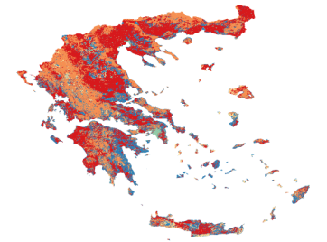In the simplified land cover classification map, the original ESA CCI dataset was reclassified into IPCC general categories. The results show that red areas represent agriculture (class 1), orange areas indicate forest (class 2), and blue areas correspond to other land types (class 6)—these three dominate the landscape of Greece.
The urban areas, shown in cyan, occupy only a small portion of the national territory. This spatial pattern highlights the limited extent of built-up zones in Greece, which, however, are often where pollution and population exposure are most critical. Therefore, the subsequent analyses will focus on the urban areas to investigate pollutant exposure and temporal trends in more detail.
● Pollution Statistics Over Urban Areas (2013–2022)
Based on the statistical charts of NO₂, PM2.5, and PM10 over urban areas in Greece from 2013 to 2022, several key trends can be observed:
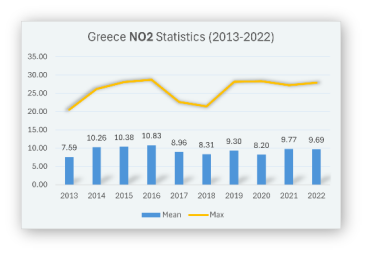NO₂ average values peaked between 2014 and 2016 (reaching around 10.8 µg/m³), then slightly declined, with a mild rebound in 2021. The maximum values remained relatively stable, mostly between 25–30 µg/m³, suggesting that NO₂ pollution in urban areas has stayed within a moderate and relatively controlled range, despite some fluctuations.
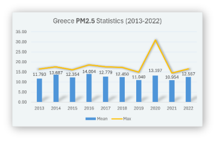PM2.5 levels show moderate variation in average concentrations, fluctuating between 11 and 14 µg/m³. A significant spike in the maximum value occurred in 2020, exceeding 30 µg/m³, likely due to exceptional meteorological or anthropogenic factors during that year. In other years, maximum values remained around 15–20 µg/m³.
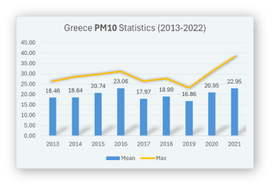PM10 shows a more evident increasing trend in both mean and maximum values. The average reached a peak of 22.95 µg/m³ in 2021, following a minimum in 2019. The maximum values rose steadily over time, approaching 35 µg/m³ in 2021, indicating a gradual accumulation of coarse particulate matter, which requires closer monitoring and emission control.
In summary, none of the annual averages exceeded the EU limit values, but the maximum values of PM2.5 and PM10 highlight the possibility of short-term pollution peaks in urban areas, pointing to the importance of real-time monitoring and targeted interventions during high-risk episodes.
● Population Exposure Assessment (2020)
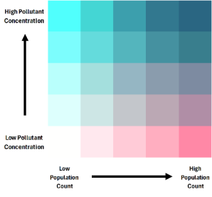In the 2020 Population Exposure Assessment, we generated bivariate maps that combine air pollutant concentrations (PM2.5 and PM10) with population density. Each region is colored based on a 5×5 classification matrix (see legend), where the vertical axis represents increasing pollutant levels and the horizontal axis represents increasing population counts.
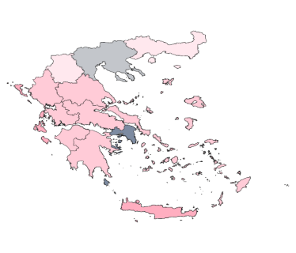The NO₂ exposure map indicates a highly localized distribution pattern. Most regions across Greece fall into low pollution categories with low to moderate population density. However, a distinct hotspot is visible in the Athens region corresponding to areas of both high NO₂ concentration and high population count.
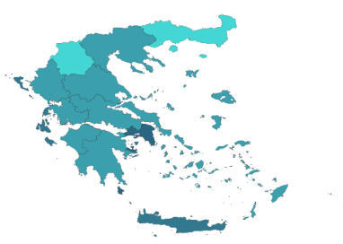
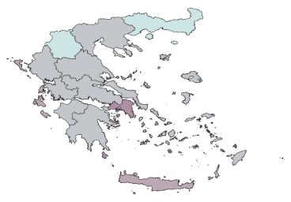The PM2.5 exposure map shows that most areas fall into mid-level pollution combined with low to moderate population density, with only a few zones (notably in the Athens and Heraklion metropolitan area) displaying higher exposure due to the convergence of dense population and elevated PM2.5 concentrations.
The PM10 map reveals a more pronounced exposure pattern, where urban regions such as Athens and Heraklion metropolitan area, indicating high pollutant levels coupled with high population counts. In contrast, northern and western regions remain lightly colored, suggesting low-risk zones.
Although most regions in Greece remain within the acceptable air quality thresholds defined by EU standards, areas with high pollutant concentrations and dense population overlap are mainly concentrated in urban centers, particularly in Athens (Attica region) and Heraklion (Crete). In the bivariate exposure maps for NO₂, PM2.5, and PM10, these cities consistently appear as dark-colored cells, indicating the highest exposure risk.
● Population Exposure Pie Charts
To better quantify the actual impact of pollution on the population, we generated pie charts based on the bivariate map classifications, showing the percentage of the population under each pollution level:
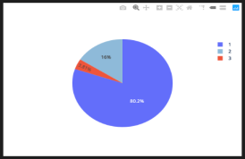NO₂: Around 80.2% of the population is exposed to the lowest pollution level (Level 1), with 16% at Level 2 and only 3.8% at Level 3. This indicates relatively low NO₂ exposure for the majority of the population, with high concentrations restricted to limited areas.
PM2.5: 100% of the population is exposed to the highest level (Level 5), indicating that PM2.5 pollution is widespread and overlaps almost entirely with populated zones.
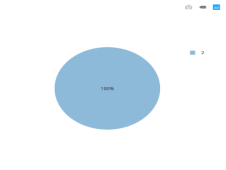
PM10: The entire population falls within pollution Level 2, suggesting moderate but widespread exposure in populated areas, especially urban centers
These results reinforce the earlier spatial analysis: urban centers are the hotspots for pollution exposure, and PM2.5 poses the most widespread risk to public health, warranting the highest attention in air quality interventions.
● Conclusion and Advise
This lab project focused on Greece, leveraging multi-source remote sensing data and QGIS to analyze the spatial distribution, population exposure, land cover relations, and annual trends of three key air pollutants: NO₂, PM2.5, and PM10.
From 2013 to 2022, pollution levels have steadily increased.
Pollution concentration maps revealed that NO2, PM2.5 and PM10 are mainly concentrated in urban areas, particularly in city cores such as Athens
Bivariate exposure maps and pie charts showed that PM2.5 poses the highest exposure risk, with 100% of the population classified under the most polluted level. While NO2 and PM10 exposure are moderate,
Land cover analysis highlighted that urban areas occupy a minimal share of national territory, yet bear the majority of pollution burden and population density, underscoring the need for targeted urban environmental management.
We have made the following table based on the pollutants and their main sources.
Pollutant | Main Sources | Typical Spatial Pattern | Relationship to Population Distribution |
NO₂ | Vehicle exhaust, natural gas combustion, heating systems | Locally concentrated along roads and urban cores | Strongly localized; only a small portion of the population is exposed to high levels |
PM2.5 | Traffic emissions, residential burning (wood, coal), industrial emissions, secondary aerosols | Widely distributed in cities and industrial areas | Nearly the entire population is exposed to high concentrations, especially in urban zones |
PM10 | Construction sites, road dust, wind-blown dust, agricultural activities | More spatially spread, especially in suburban or open areas | Low overlap with densely populated areas; most people exposed to low-to-moderate levels |
Several factors contribute to this pattern:
· High traffic density: Urban areas have a large number of vehicles and frequent congestion, making traffic a primary source of NO₂ and PM10 emissions.
· Concentrated human activity: The mix of residential, commercial, and industrial areas leads to dense energy use and emissions.
· Poor atmospheric dispersion: Especially in Athens, the surrounding mountains make temperature inversions more frequent, limiting pollutant dispersion.
· Urban heat island and dry climate: These conditions prolong the suspension of particulate matter, especially PM2.5.
To address rising pollution and safeguard public health in cities, the following actions are recommended:
· Optimize urban transportation: Promote electric vehicles and public transport, while restricting high-emission vehicles in city centers.
· Tighten industrial emission controls: Enforce time-based production limits and real-time monitoring for factories near urban zones.
· Increase green cover: Develop urban forests and green belts to trap pollutants and improve dispersion.
· Deploy high-resolution monitoring networks: Install sensors in high-risk zones for real-time tracking and alerts.
· Enhance public health protection: Provide timely pollution warnings and encourage reduced outdoor activity during peak pollution periods.
By accurately identifying high-exposure zones and understanding their underlying causes, future air quality management in Greece should focus on urban cores, adopting a human-environment-pollution integrated approach to improve long-term environmental health.